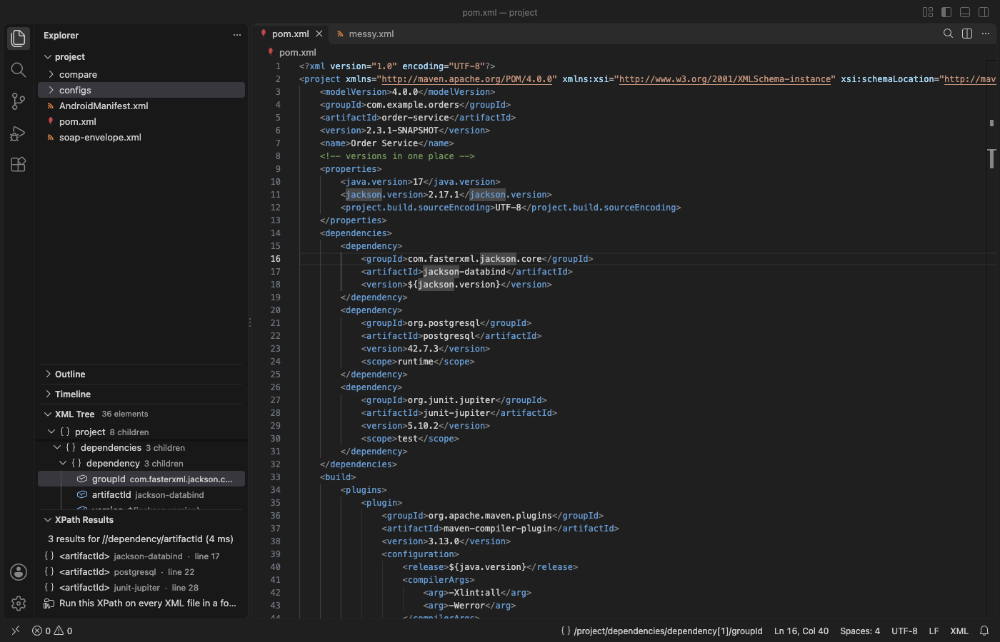

Open files in VS Code and Cursor / Code and APIs
Copy the XPath of the XML element under the cursor
Writing an XPath by hand means counting sibling positions, and in a file with a default namespace, such as a pom.xml, the plain path may select nothing in other tools. XML Formatter & XPath Tools shows the XPath of the element under the cursor in the status bar and copies it in 3 styles, with positions, with id or name attributes, or in a portable local-name() form. Copy XPath is free, and Zovo Pro (USD 19 once) runs one XPath on every XML file in a folder, with 3 free tries.
Free, MIT license. Extension ID zovo.zovo-xml-xpath-tools, version 0.1.1. Needs VS Code 1.90.0 or newer.

Steps in VS Code
- Install XML Formatter & XPath Tools from the Marketplace, or press Ctrl+P (Cmd+P on macOS) and run
ext install zovo.zovo-xml-xpath-tools. - Open the XML file and put the cursor inside the element, or on an attribute. The status bar shows its XPath, such as
/project/dependencies/dependency[1]/groupId. - Right-click in the editor and pick "Copy XPath at Cursor" to copy it in the default style, with positions.
- To pick another style, click the XPath in the status bar or run "XML: Copy XPath at Cursor As...". Pick with positions, with id or name attributes, or portable.
- In the XML Tree view in the Explorer, right-click an element and pick Copy XPath.
- To test the path, click the search button in the editor title, paste it and press Enter. XPath Results lists the element it selects with its line.
Where Zovo Pro saves time
Copy XPath at Cursor, the status bar path, the XML Tree view, XPath 1.0 with the file's own prefixes, Format Document and Minify XML are free and work offline. The setting xmlXpathTools.copyXPathStyle sets the default style (indexed, predicates or portable).
Once you have the path, you often need the same value from many files, such as the version of one dependency in every pom.xml of a repository. Run XPath on Every XML File in a Folder runs one XPath over every .xml, .xsd, .csproj, .svg, .kml and similar file under a folder, each with its own namespace prefixes. The results open as CSV (file, line, kind, name, value), as JSON or as a Markdown report. The other Pro tools are Format All XML Files in a Folder and Compare Two XML Files Ignoring Formatting.
With Run XPath on Every XML File in a Folder (Zovo Pro)
- Right-click a folder in the Explorer and pick "Zovo Pro: Run XPath on Every XML File in a Folder", or use the Zovo Pro line at the end of XPath Results after you run the path in one file.
- Type or paste the XPath, then pick CSV, JSON or a Markdown report.
- A try counts only when you get a result. Escape, an XPath typo or a folder with no XML files uses none.
Run XPath on Every XML File in a Folder works 3 times on your computer before it asks for a license, and a try counts only when you get a result. Opening a file shows no popup and no countdown.
Zovo Pro costs USD 19 once. It is not a subscription, and it turns on the Pro tools in every Zovo extension, not only XML Formatter & XPath Tools. After a card payment (Stripe) your license key shows on the next page. In VS Code, run "Zovo Pro: Enter Zovo Pro license key" from the Command Palette and paste it. The key is checked on your computer, with no network call. With GitHub Sponsors, pick the "$19 one time" tier, then run "Zovo Pro: I already paid: unlock with GitHub Sponsors" and sign in with the same GitHub account. With PayPal, send USD 19 with "Zovo Pro" in the note and the key comes by email within a day.
A team of 5: USD 59 once, by card or by PayPal. Every rule and every Pro tool is on the Zovo Pro page.
Steps in Cursor, Windsurf or VSCodium
- Open the Extensions view with Ctrl+Shift+X (Cmd+Shift+X on macOS).
- Search for
zovo.zovo-xml-xpath-toolsand click Install. Cursor, Windsurf and VSCodium install from Open VSX, where it is published aszovo/zovo-xml-xpath-tools. - If your editor has no gallery, download the .vsix from the Open VSX page and run "Extensions: Install from VSIX...".
- Then use it the same way as in VS Code.
What XML Formatter & XPath Tools handles
- Paths with positions, such as
/project/dependencies/dependency[2]/artifactId. Positions count only the siblings that the same name test matches, so the path selects one element. - Paths with a unique id, name or key attribute, such as
/manifest/application/activity[@android:name='.SettingsActivity']. - Portable paths, such as
/*[local-name()='project']/*[local-name()='dependencies'], which work in any XPath 1.0 tool without namespace setup. - Attributes. With the cursor on one, the path ends in
/@name.
What it does not do
- XPath 1.0 only. XPath 2.0 and 3.1, XQuery and XSLT are not supported.
- When a prefix is bound to two different namespaces in one file, that step uses
local-name()andnamespace-uri()instead of the prefix. - The status bar path, the tree and XPath work on files up to 60 MB (
xmlXpathTools.maxFileMB).
Other options
- XML Tools by Josh Johnson. A VS Code extension with XPath evaluation and a command that gets the XPath at the cursor.
- Browser DevTools. For an HTML page in a browser, right-click a node in the Elements panel and use Copy, then Copy XPath.
Install counts and Open VSX status were checked on 13 November 2026. Descriptions in quotes are the extensions' own.
Questions
Why does my copied path select nothing in another tool?
The file probably has a default namespace, as a pom.xml or an SVG does. In strict XPath 1.0 a name without a prefix matches only elements in no namespace. Copy the portable style, which uses local-name() and works in any tool.
Can I copy the path of an attribute?
Yes. Put the cursor on the attribute. The copied path ends in /@ and the attribute name.
Can I change the default style?
Yes. Set xmlXpathTools.copyXPathStyle to indexed, predicates or portable. The status bar and Copy XPath at Cursor use it.
Does it work in Cursor or Windsurf?
Yes. Cursor, Windsurf and VSCodium install extensions from Open VSX. Search for the extension in their Extensions view and install it there.
More about XML Formatter & XPath Tools
Read the XML Formatter & XPath Tools page for every feature and setting, or the source code on GitHub.
Related guides
- Format XML in VS Code and run XPath on it
- Why an XPath returns nothing on XML with a namespace
- Check an XML file for well-formedness errors in VS Code
- Format a large XML file in VS Code
Zovo Pro and support
Zovo Pro: USD 19 once, every Zovo viewer. It turns on the Pro tools in this extension and in the other Zovo extensions you use. The free features stay free.
After a card payment your license key shows on the next page. Paste it with the command "Zovo Pro: Enter a key".
You can also support the work with no Pro:
Need your format supported?
Open a format request with a sample file, and I reply there whether it can be done. For USD 299 once, through this GitHub Sponsors tier, I add your file format or a missing feature to this extension, with tests, within 7 days.